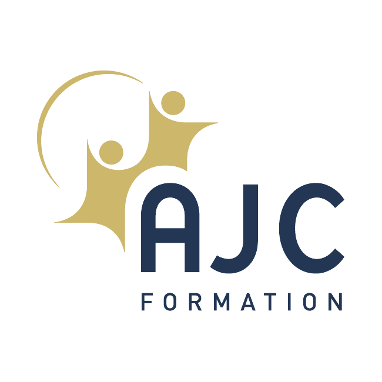
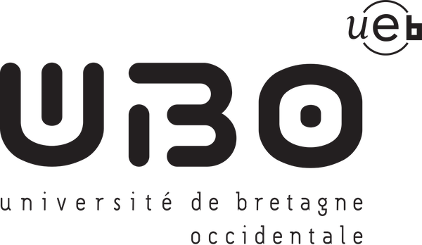
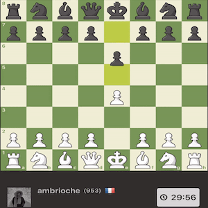
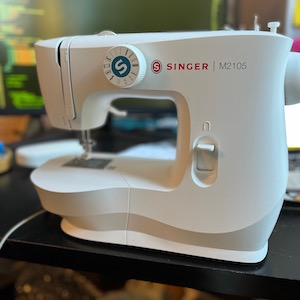
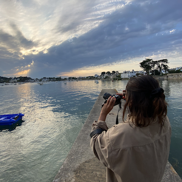
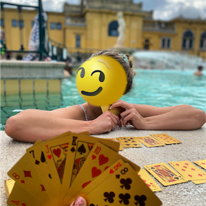
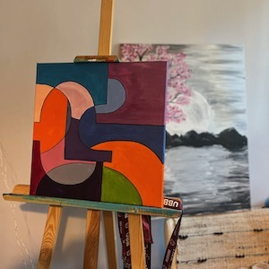

Ambre MICHEL
Developpeuse Java fullstack.
26 ans
Bordeaux
07 69 93 36 96
Langages & frameworks
 JAVASCRIPT
JAVASCRIPT BOOTSTRAP
BOOTSTRAPParcours académique
 AJC Formation
Université de Bordeaux
 Université de Bretagne Occidentale
Parcours
Ariane Group
mars 2023 - Aujourd'hui
En mission chez le Client Ariane Group (site Issac), j'ai été intégrée aux équipes Hypersonique afin de participer au développment des logiciels de mopyens sol de contrôle et de test, des équipements embarqués (chaînes avionique et charge utile).
J'ai travaillé en Java et C++, en utilisant notamment les frameworks Spring, JavaFx et Qt, pour concevoir et implémenter des logiciels applicatifs à architecture modulaires orientées micro-servie. Ces systèmes sols de contrôle, permettent d'assurer la communication avec les équipements et de superviser des données en temps réel. Je maîtrise les protocoles de communication tels que XTCE, Modbus, RS422, SCPI, UDP ou HTTP.
En parallèle de ma mission principale, je suis intervenue en tant qu'opératrice afin de valider des briques logicielles des moyens sol du M51. J'ai donc contribué à la rédaction de documentation technique (Plans de validation et d'intégration logiciel et compte-rendus asscociés).
Cette expérience m'a permis de développer une forte sensibilité aux enjeux de la sécurité fonctionnelle, de la traçabilité logicielle, et de la validation de systèmes critiques, en appliquant rigoureusement les processsur d'intégration, de vérification er de validation (IVVà.
Études en Chimie
2017-2022
Avant de me spécialiser dans le developpement logiciel, j'ai suivi un parcours universitaire jusqu'à obtenir un Master 2 en Chimie de Synthèse Organique. Cette formation d'excellence en Recherche et Developemment m'a permis d'acquérie une rigueur méthodologique, un esprit critique, ainsi qu'une solide capacité à analyser, structurer et documenter des travaux complexes.
Mes expériences en laboratoires du CNRS (R&D dans le developpement de voie de synthèse de candidats médicaments), m'ont appris à rédiger des protocoles et des rapports techniques, ainsi qu'à travailler dans des environnement exigeant un haut niveau de traçabilité. En combinant mon esprit logique et ces compétences directement transférables aux métiers du développement logiciel, ma reconversion a été un succès.
Associatif
2017-2019
En parallèle de mes études, ma proactivité m'a poussé à m'investir dans l'associatif.
En première année de licence, je me suis inscrite dans une association ayant pour but de promouvoir la place de la femme en science. Ma mission a consisté a dispenser des cours bi-mensuel durant 1 semestre, sur l'initiation à la programmation informatique à des élève de cycle 2 (langage Scratch).
En deuxième année de licence, j'ai occupé le poste de présidente de l'Association Brestoise des Étudiants en Physique et/ou Chimie. Durant mon mandat, j'ai coordonné des évènements socio-culturels (soirée blind test, olympiades...); ainsi que des projets pédagogique (visite de laboratoire à travers toute la France, mise en place de séances de tutorat pour les étudiants de L1).
Enfin, en première année de master, j'ai été tutrice pour les étudiants de licence pendant un semestre.
Ces différentes expériences ont contribuées à developper mon sens de l'organisation, une forte adaptabiltié afin de collaborer efficacement avec des profils variés - des qualités que je mets aujourd'hui au service de mes projets techniques.
Barmaid
2016-2021
Afin d'être totalement indépendante financièrement dès mes 18 ans, j'ai travaillé en restauration en parrallèle de mes études.
J'ai effectué 5 saisons estivales au sein du même établissement. Grâce à mes montées en compétences j'ai accéder au poste de responsable de bar durant mes deux dernières saisons.
Ce poste à responsabilités, m'a permis de developper des capacités relationnelles, ainsi qu'un sens du service et de la gestion d'équipe.
Autre experiences professionnelles
Logiciel applicatif de gestion administrative d'un reseau de distribution :
Développement d'une application web (modèle itératif et incrémentiel), dont la conception a été pensée par l'entreprise Tessi.
Utilisation d'une API de type Json/Rest et des technologies associées aux frameworks Spring et Angular.
Site E-commerce :
Conception et développement d'un modèle prototypaire sous Spring MVC. Utilisation d'API de type servlet/jsp pour la gestion d'un panier d'achat. Token d'authentification. Utilistion du protocole Https.
Logiciel de gestion administrative d'un centre de formation :
Conception et développement d'un modèle prototypaire sous Spring et Angular. Token d'authentification. Editer les données d'une base de données par l'interface graphique (angular) en fonction du type de compte (admin/user). Utilisation d'API de type json/REST.
Outils et méthodologie
Centres d'intérêt
- 
- 
- 

- 
- 